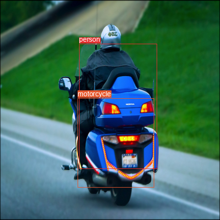
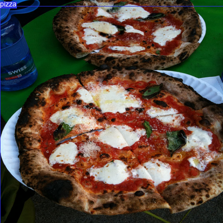
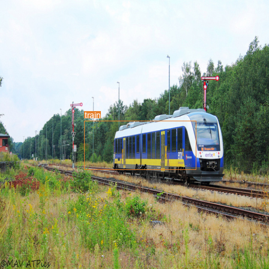
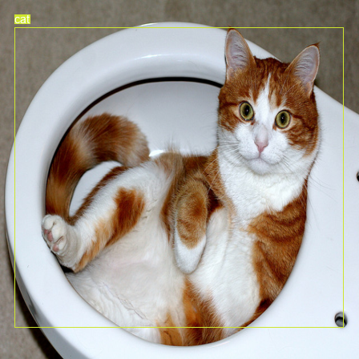
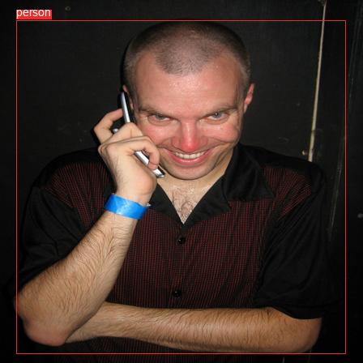
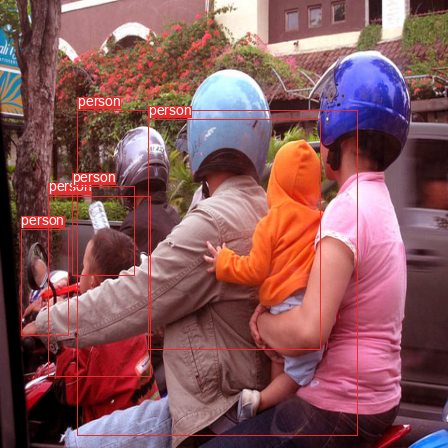

OBJ_IDX = 20 · the VOC layoutOBJ_IDX = 80exists_box mask fired on only 3 cells —w, h as cell-relative (like x, y)w, h were stored image-relative all along




| Class | GT count | AP |
|---|---|---|
| person | 8,779 | 0.035 |
| zebra | 236 | 0.36 |
| Aspect | Redmon 2016 | This work |
|---|---|---|
| Dataset | VOC · 20 classes | COCO · 80 classes |
| Backbone | Darknet24 (39M) | ResNet18 (11M) |
| Epochs | 135 | 60 |
| Augmentation | Full pipeline | Resize only |
| mAP@0.5 | 63.4 | 4.15 |
| → or SPACE | next step / slide |
| ← | previous step / slide |
| F | toggle fullscreen |
| O | overview grid |
| 1 … 9 … 20 | jump to slide N (type digits) |
| HOME / END | first / last slide |
| ? | toggle this help |
| ESC | close overlay |